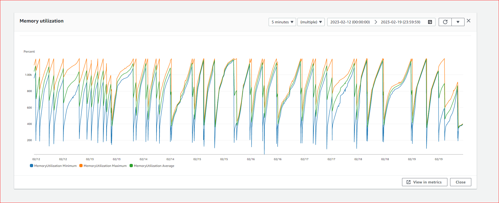

Recently, I encountered some issues with memory usage and configuration in containerized applications running on AWS ECS. What initially seemed like a routine microservice deployment turned into a case of memory leaks and frequent restarts. Similar behavior had occurred before in other services, including in the Prepaid and now in TFT/Channel API services. The final fix for the issue turned out to be less complex, however the real takeaway came from the journey of diagnosing and troubleshooting the problem, and getting a deeper understanding of the container memory management , revealing both common mistakes and some surprising factors.
The original issue began when a microservice in production, responsible for managing customer auto-recharges, started getting killed and restarted due to memory exhaustion. This was unexpected, given that the service handled a low load, and our Spring Boot-based microservices, deployed on ECS, typically had a stable memory footprint. However, this time, the memory consumption for this service gradually increased until the container ran out of memory, triggering a restart.
At first, the assumption was straightforward: the application might need more memory. The support team increased the heap size, which provided a temporary fix, but the problem returned within a week.

The steady increase in memory consumption, followed by the container hitting its limit and being killed, repeated in a predictable pattern. Yet, isolating the issue proved difficult. Ideally, we wanted to reproduce the problem in lower environments to troubleshoot effectively. However, in both SIT and UAT, there were no signs of memory leaks or unexpected restarts. We brought in the performance testing team, who ran continuous tests for 48 hours. Again, no abnormal behavior was observed—no memory spikes, no container restarts. At this point, the investigation became more frustrating. Why was this only happening in production and not in any of the lower environments?
This discrepancy highlighted one of the most common and challenging aspects of diagnosing container memory issues: the environment-specific nature of these problems. Production setups often differ in subtle but crucial ways, from traffic patterns and data volumes to the interactions between microservices. The next step was to look deeper into what exactly set the production environment apart from our test setups. One of the things that came up was, were the container images different, or different instance sizes/configs had any role to play? Since it was common for all services, we leaned towards the fact, how this application was running in production.
This led me to question how much memory the application truly needed. The first step was to verify if the JVM was even aware it was running in a containerized environment. In earlier versions of Java 8 (specifically Update 131 and below), the JVM ignored CGroup limitations imposed by containers, meaning it wouldn’t respect the memory restrictions set by the container environment. Instead, it operated as if it had access to all the host’s available memory, potentially leading to the exact kind of memory issues we were seeing. If the application was running on an outdated version of Java 8, the JVM might be bypassing the container’s memory limits, using more memory than anticipated. This could explain why the service worked fine in lower environments, where resource pressure was lower, but faltered in production. However all our applications had predefined -Xms and -Xmx settings. The docker file had the following
FROM amazoncorretto:8
# Install JDK
RUN yum install -y aws-cli \
&& yum install -y which \
&& rm -f /etc/localtime && ln -s /usr/share/zoneinfo/Australia/Sydney /etc/localtime
# Install gcredstash into the container so we can use it to retrieve certs and other secrets.
RUN yum install -y https://github.com/winebarrel/gcredstash/releases/download/v0.3.5/gcredstash-0.3.5-1.el6.x86_64.rpm
# Add The following command to your startup.sh script to configure credstash for the account the container is starting in.
# AWS_REGION=ap-southeast-2 gcredstash setup
# Set one or more individual labels
LABEL moa.ms.base.version="0.0.1" \
moa.ms.base.release-date="2020.02.03" \
moa.ms.base.version.is-production="moa"
This would install the latest image of Amazon’s corretto Java 8, but didn’t specify the exact version (learning number 1) . To find out the full version we hopped on to the container and checked
$ java -version
openjdk version "1.8.0_302"
OpenJDK Runtime Environment Corretto-8.302.08.1 (build 1.8.0_302-b08)
OpenJDK 64-Bit Server VM Corretto-8.302.08.1 (build 25.302-b08, mixed mode)
This version respected the container limits and with added heap size configuration, we moved to the next step: The container memory configuration.
export JVMXMS="256m"
export JVMXMX="1792m"
export Memory="$(( ( ${JVMXMX/m/} * 10 / 100 ) + ${JVMXMX/m/} ))"
export MemoryReservation="${JVMXMS/m/}"
There are two memory settings for ECS containers, soft and hard limits. The soft limit (Memory Reservation) ensures that the container has enough memory to run, but the container can exceed this limit if the host has available memory. The purpose for soft limit is to active the 'alarms', when the limits were breached. A common case for auto-scaling. The hard limit (Memory) is the maximum amount of memory that the container is allowed to use. If the container tries to use more memory than the hard limit, it will be forcibly stopped by ECS (it’s killed).
The container memory has been fixed at 10% more than XMX value (1792m), which is the heap size. This seems like a problem as its not taking into account memory used by JVM for its internal functioning (learning 2 and 3). The JVM’s off-heap is created at the JVM startup and stores per-class structures such as runtime constant pool, field and method data, and the code for methods and constructors, as well as interned Strings. Even with container-aware Java, memory consumption could still exceed expectations if non-heap memory—such as Metaspace, thread stacks, or direct memory—wasn't properly managed. With this in mind, we broadened our focus to inspect the total memory footprint, not just the heap size.
Beyond the heap, the JVM's off-heap memory is initialized during startup. This off-heap memory includes critical components such as: • Metaspace: Where class metadata is stored. • CodeCache: For storing just-in-time (JIT) compiled code. • Thread stacks: Memory allocated per thread. • DirectByteBuffers: Allocations made outside the heap for I/O operations and other performance optimizations. • JVM-native memory: Used internally by the JVM for various system-level operations.
In total, the memory footprint of a Java process can be summarized as: Java Process Memory = Heap memory + Metaspace + CodeCache + (ThreadStackSize * Number of Threads) + DirectByteBuffers + JVM-native memory
Unfortunately, the JVM only provides high-level information about non-heap memory, and it doesn't break down the specific contributions of each component. However, with a good understanding of default behaviors and any custom values in the configuration, we can make reasonable estimates of these additional memory requirements. Given this, we must reconsider our memory allocation strategy. Relying solely on the -Xmx value without accounting for the overhead caused by off-heap components could lead to situations where the container memory is exhausted, resulting in service instability and container restarts.
In the next steps, we'll explore ways to refine memory settings to better accommodate these non-heap requirements while maintaining the efficiency and performance of the service.
The next logical question is: how much off-heap memory is this application consuming? Given that all other memory parameters are identical across our other microservices, what stands out in this particular service? The key difference is in the code below, which utilizes off-heap memory when generating error responses:
@Override
public Mono<Void> handle(ServerWebExchange exchange, Throwable ex) {
LOG.error(ex.getMessage(), ex);
final ErrorResponse errorResponse = chain.doHandle(ex);
ServerHttpResponse response = exchange.getResponse();
response.setStatusCode(HttpStatus.valueOf(errorResponse.getHttpStatus()));
response.getHeaders().setContentType(MediaType.APPLICATION_JSON);
return response.writeAndFlushWith(Mono.create(sink -> {
UnpooledByteBufAllocator buffAllocator = new UnpooledByteBufAllocator(true);
DataBuffer dataBuffer = new NettyDataBufferFactory(buffAllocator).allocateBuffer();
dataBuffer.write(toByteArray(errorResponse));
sink.success(Mono.just(dataBuffer));
}));
}
This code acts as a global error handler for the microservice and is invoked whenever an error response needs to be returned to the client. Could it be there were more error conditions happening in production, which didn't occur so often in non-prod, and therefore wasn't replicated in lower env? Considering error did take place, the expectations would be JVM would reclaim native memory as reference to it would still reside within heap and claimed by GC.
However the code above uses UnpooledByteBufAllocator, which employs DirectByteBuffer, an off-heap memory structure.
DirectByteBuffer is a type of buffer allocated outside of the JVM heap, in the system's native memory (off-heap). Unless explicitly configured with the -XX:MaxDirectMemorySize flag, the amount of off-heap memory available for DirectByteBuffer allocations is based on Runtime.getRuntime().maxMemory(), which corresponds to the maximum heap size (-Xmx). This was first introduced in Java NIO (Java 1.4) to improve I/O performance. In Java NIO, there are two types of ByteBuffer: • HeapByteBuffer: Wraps a byte array (byte[]) and is allocated on the JVM heap. • DirectByteBuffer: Allocates memory directly off-heap. When performing I/O operations, the system can only read and write bytes from native memory. If you're using a HeapByteBuffer for I/O, its contents are often copied into a temporary DirectByteBuffer created by the JVM. This process can silently consume a significant amount of native memory, leading to what appears as a memory leak. Additionally, the JVM caches DirectByteBuffer instances per thread, with no default limit on the number or size of these buffers. If an application creates many threads that perform I/O operations with large HeapByteBuffers, the JVM might allocate excessive native memory. Since native memory regions tied to a thread are only released when the thread terminates and garbage collection (GC) cleans up that thread’s DirectByteBuffer instances, it can cause memory usage to spiral out of control. Starting with JDK 9, the JVM introduced a system property to help manage buffer caching, but the problem persists in earlier versions, including Java 8.
In this particular service, the use of DirectByteBuffer makes memory consumption highly variable, especially during I/O-intensive operations such as error handling. Without a limit on how much memory DirectByteBuffer can consume, the application might use more memory than anticipated, leading to container restarts or OutOfMemoryErrors. To maintain predictable memory usage, it’s essential to set the -XX:MaxDirectMemorySize JVM parameter. This flag caps the maximum amount of off-heap memory that can be used by DirectByteBuffer. If memory usage exceeds this threshold, the JVM will throw an OutOfMemoryError, giving you a clear signal that memory allocation limits have been breached. By defining a reasonable value for -XX:MaxDirectMemorySize, you can prevent the application from consuming excessive off-heap memory while also avoiding unexpected memory spikes caused by uncapped native buffer usage.
Managing DirectByteBuffer is a critical aspect of controlling the memory footprint of Java applications, particularly when they handle intensive I/O operations. In this microservice, the use of UnpooledByteBufAllocator and off-heap DirectByteBuffers for error handling is a key contributor to off-heap memory usage. Setting a proper limit with -XX:MaxDirectMemorySize helped ensure predictable memory consumption, preventing memory leaks, and reducing the likelihood of container restarts.
Moving forward, it's crucial to strike a balance between memory allocated to heap and off-heap resources, especially in containerized environments where resources are tightly managed. Regularly monitoring and fine-tuning these settings can prevent many of the memory-related issues that might otherwise lead to service instability.
Each JVM thread is allocated a private native stack to store the call stack, local variables, and intermediate results, making it integral to method invocations. This is a core part of the JVM specification, and all JVM implementations rely on these thread stacks. By default, the JVM assigns a stack size that depends on the operating system and the underlying architecture. However, the size can be modified using the -Xss flag. For example, -Xss1m sets each thread’s stack size to 1 MB. It's crucial to note that the more threads an application has, the higher its overall memory consumption will be. This became an important factor as why our containers were being killed and restarted frequently. Too many threads are often overlooked and is often a root cause of memory problems, and in this case it was.
After days of investigation without finding the root cause of the memory leak, I decided to take a production thread dump in hopes of gaining new insights. The results were astonishing: the application had spawned around 10,000 threads in the TIMED_WAITING state—this for an application that was barely receiving 1 transaction per second (TPS). Here’s a sample thread stack trace from the dump:
"boundedElastic-evictor-34823" #34937 daemon prio=5 os_prio=0 tid=0x0000fffede005000 nid=0x88d8 waiting on condition [0x0000ffed1fdfe000]
java.lang.Thread.State: TIMED_WAITING (parking)
at sun.misc.Unsafe.park(Native Method)
- parking to wait for <0x00000000f8b6bd28> (a java.util.concurrent.locks.AbstractQueuedSynchronizer$ConditionObject)
at java.util.concurrent.locks.LockSupport.parkNanos(LockSupport.java:215)
at java.util.concurrent.locks.AbstractQueuedSynchronizer$ConditionObject.awaitNanos(AbstractQueuedSynchronizer.java:2078)
at java.util.concurrent.ScheduledThreadPoolExecutor$DelayedWorkQueue.take(ScheduledThreadPoolExecutor.java:1093)
at java.util.concurrent.ScheduledThreadPoolExecutor$DelayedWorkQueue.take(ScheduledThreadPoolExecutor.java:809)
at java.util.concurrent.ThreadPoolExecutor.getTask(ThreadPoolExecutor.java:1074)
at java.util.concurrent.ThreadPoolExecutor.runWorker(ThreadPoolExecutor.java:1134)
at java.util.concurrent.ThreadPoolExecutor$Worker.run(ThreadPoolExecutor.java:624)
Upon further analysis, I discovered that this was caused by a bug in Spring Boot 2.4.1, which was not correctly handing a HTTP header "Content-Type: application/x-www-form-urlencoded". Majority of requests to API would have a JSON payload and would have "Content-Type: application/json". When this header was encountered, the framework tried to handle the various multi-part http message. More details on this defect can be found here: Spring Framework Issue #26263.
Tracking down the root cause of memory issues is often a complex and time-consuming process, and this incident underscored the importance of understanding the memory footprint beyond just heap usage. In this case, the issue was not a memory leak per se, but rather a bug in Spring Framework that caused threads to accumulate unnecessarily. Once the bug was identified, we resolved it by upgrading the Spring Framework version. However, through this process, we gained valuable lessons:
MemoryReservation=1024m Memory=1536m ```
While these values won't guarantee that the container won’t be killed due to memory issues, they offer a reasonable estimate of the JVM’s memory consumption. Keep in mind that memory for thread stacks, off-heap memory, and the container's own memory usage must also be factored into the total memory allocation.
This investigation into memory consumption, while challenging, helped us uncover a bug that led to unexpected memory usage and frequent container restarts. While fixing the bug resolved the immediate issue, it highlighted the broader complexity of memory management in containerized Java applications. Understanding how off-heap memory, thread stacks, and direct memory affect the total memory footprint is key to avoiding similar issues in the future.
Although we've managed to address this specific problem, we’re likely to encounter new memory-related challenges down the road. Continuous monitoring, testing, and tuning are critical to ensuring the stability of applications in containerized environments.